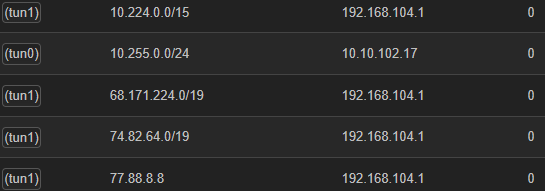
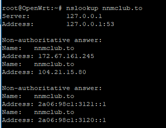
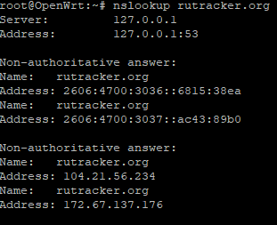
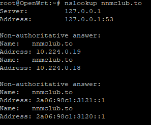
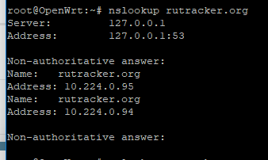
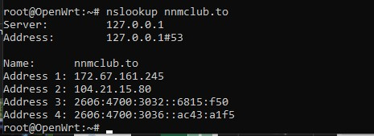

- Тип настройки: openVPN, роутер с openWRT
- Тип проблемы: не работают все заблокированные сайты
- Что с сайтом: получаете ошибку в браузере
- Используемый браузер: Mozila Firefox
Добрый день! Заранее извиняюсь за тупой вопрос, но надеюсь на Вашу помощь. Я пытаюсь настроить antiZapret на моём роутере с openWRT.
По гайдам из интернета и по похожему вопросу ниже ничего не получается.
Шаги которые я выполнил:
-
закинул .ovpn в openVPN
-
создал интерфейс OpenVPN в роутере (Unmanaged,tun0)
-
создал зону фаервола для него. Настройки как на скрине ниже
-
Ничего не работает. На этом форуме нашёл, что в wan надо указать dns 8.8.8.8 и добавить
route 8.8.8.8в .ovpn… Но всё равно не работает((
PS. с простым openvpn на компьютере (windows) всё работает, также работает Обход блокировок Рунета.
Выглядит нормально. Убедитесь, что в настройках dnsmasq отключён rebinding protection, это мешает работе DNS.
Спасибо, убрал. Вроде бы всё заработало.
Правда, 2ip всё равно показывает неправильный dns, но, думаю, это из-за того, что я не использую DOH(у меня почему-то с ним(когда настроен в роутере, doh mozilla работает) ничего не загружается).
DNS показывается правильный, это один из VPN-серверов АнтиЗапрета.
DoH/DoT с АнтиЗапретом использовать не получится.
Хорошо, спасибо
Добрый день. Можете помочь. Так же не могу настроить Антизапрет.
-
Взял конфиг файл с сайта антизапрета.
-
Дописал в конфиг route 77.88.8.8 255.255.255.255
route 8.8.8.8 255.255.255.255
-
В Wan вписал вручную DNS 77.88.8.8 и 8.8.8.8.8
-
Отключил rebinding protection
-
Создал интефейс
-
создал зону Firewall настроил
ПРОВЕРЯЮ
- Маршруты создались

- Нслукап ДО антизапрета

 - Нслукап После антизапрета


Заглушки от провайдера не получаю, НО и сайты не открываются, подскажите что я упустил?
Провайдер Билайн.
Вероятно, не работает NAT (MASQUERADE). Возможно, следует создать UNMANAGED-интерфейс, а не DHCP.
следует создать UNMANAGED-интерфейс
Да действительно помогло. В этом была вся проблема. Спасибо.
Переодически пеерстают открываться заблокированные сайты. Вот лог
Лог.txt (73.9 КБ)
После перезагрузки роутера опять сайты открывается.
Куда копать, может сделать настройку перезапуска vpn. Не могу понять в чём дело.
Добрый день!
гляньте плиз настройку, не работает…
-
Взял конфиг файл с сайта антизапрета.
-
Дописал в конфиг route 77.88.8.8 255.255.255.255
route 8.8.8.8 255.255.255.255
-
дописал в wan
-
Отключил rebinding protection
-
интерфейс ( он должен писать что нет сетевого интерфейса??)
-
создал зону Firewall настроил

{kind=link}
{kind=link}
{kind=link}
{kind=link}
{kind=link}
{kind=link}
{kind=link}
{kind=link}
{kind=link}
{kind=link}
{kind=link}
{kind=link}
{kind=link}
{kind=link}
{kind=link}
это даст инфу какую то?

делал по скринам выше, буду благодарен если дадите ссылку на инструкцию
Вероятно, у вас не запущен OpenVPN, раз в пункте 5 написано об отсутствии сетевого устройства и DNS не перенаправляются в туннель, даже если бы интерфейс на вкладке «интерфейсы» был настроен неправильно.
Смотрите журналы (логи).
Вижу, что у вас PPPoE. Возможно, OpenVPN по-особому обрабатывает его маршруты, см. таблицу маршрутизации (ip r).